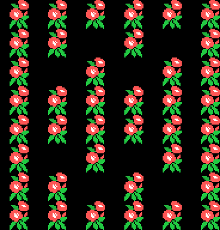

The game
A little fellow walks up a road that never stops moving, dodging creatures, picking things up and shooting, all the way to the throne. Everything on this page comes from reading the code that does it.
The screen

The play area is columns 0 to 22; from column 23 on is the right-hand panel, with HISCORE, SCORE, REST —the lives—, the world map with its blinking dot and the ©KONAMI 1985 at the foot. The background moves one pixel at a time, and the panel is never touched because each frame's dump stops at column 22.
Watch the score: the panel paints six digits and then a fixed zero stuck behind them, so what you see is ten times the internal counter. Picking something up is worth 100, 500, 1000 or 2000 of the points you see; killing a creature, between 500 and 1000 depending on its type (the table at 0x751A).
Moving
The controls drive the player's state directly (0xE120): 1 up, 2 down, 3 right, 4 left, 0 still. Up and down move one pixel per step —one and a half with the boot— and the limits are row 15 at the top and 0xAA at the bottom. Sideways the range is X = 0x0A to X = 0xAB.
Sideways is not a plain step: there are three curves of 32 offsets (0x5AD4, 0x5AF4 and 0x5B14), one for when the screen is scrolling up, another for down and another for when the background is still. Walking sideways runs through whichever curve applies, and on step 0x20 the footfall sounds.
The background in front of the player is always checked (0x5B6A): the character in the name table is read at four probes around him, and since background characters change number with the scroll offset, the comparison is made against 0x40 + 24 × phase, which is where the block in use right now begins. That is what tells road from scenery.
Shooting
The button fires up to two shots at once, each with its 8-byte slot at 0xE1E0. They go up or down according to 0xE121 —the last vertical direction pressed— at four pixels a frame, using sprite pattern 0x40 in white. They go out when their counter runs down or when they leave the 0xC0 to 0xFA margin.
The creatures shoot too: there are three enemy shots (0xE1B0, 8 bytes each) that come out aimed at the player and stop on touching the background.
The creatures
Ten 16-byte slots at 0xE200, and twelve types. Each type is a routine in the table at 0x6B58, plus another that finishes off its slot as it is released (0x6861) and another that decides where it comes in (0x68B4). What each one does:
| type | behaviour |
|---|---|
| 1 | chases the player and watches the background ahead |
| 2 | comes and goes across the screen |
| 3 | moves in a straight line and bounces |
| 4 | jumps, aiming at the player |
| 5 | stays still blinking and then shoots off |
| 6 | stops on the spot |
| 7 | comes down to row 0x60 and stays there |
| 8 | the same, with a different frame |
| 9 | chases and dies on reaching row 0xD0 |
| 10 | circles around the player |
| 11 | glides, changing course at random |
| 12 | the big one on the throne screen |
The chase is not a hard turn: the engine at 0x6B72 eases the creature's velocity towards the one that would take it to the player, in 8.8 fixed point, and the speed scale (0x6A8A) runs from 0x0C to 0x1E depending on the difficulty, which climbs with each screen up to 0x20.
Who comes out and when is set by two tables: the one at 0x730E, which gives the type for each stage's steady trickle (always 10 or 11), and the one at 0x73AE, with twenty bytes per stage —ten (type, how many) pairs— ordered up as you pass each stretch of road. Types below 10 come out every 32 frames and the rest every 16; type 12 comes out as soon as it is ordered. And while the dying, the goal or the ending music is playing, none comes out at all.
A creature can die before being born: if the square where it is due to appear is painted, it is dropped (0x699C).
What you pick up
Eight 6-byte slots at 0xE400, and the collision is a 24 × 24 square around the player. Objects ride with the scroll, blink while they have not been picked up, and the ones carrying a points label float up on their own until they go out.
Thirteen types, and four do more than add points:
- 6 is the goal: it kills every creature on screen and starts the end of the stage (3000 points);
- 7 sits the player on the throne (3000 points);
- 8 is the boot: you walk one and a half times faster (5000 points);
- 9 is the shield: 5000 points and, while it lasts, the square checked to the right goes from two columns to four.
The rest accumulate by class: on the fourth of a kind, the big prize. Each stage's list (0x7888 onwards) is (position, type) pairs, and it is consulted every 16 pixels of scroll to see whether something is due. In stages 1 and 3 there are also type 5 objects that break when you stomp on them.
The world
Eighteen screens, in two halves of nine. The route is not a line: the table at 0x7B62 gives two destinations per screen, and which of the two is taken depends on whether you are going up or down. In the top half:
| from | going up | going down |
|---|---|---|
| 0 | 1 | 2 |
| 1 | 4 | 2 |
| 2 | 5 | 3 |
| 3 | 1 | 4 |
| 4 | 5 | 6 |
| 5 | 6 | 3 |
| 6 | 7 | 8 |
| 7 | 5 | 3 |
Screen 8 is the throne. Getting there brings up the message —BRING BACK / THE HOLLY GEM / THE WORLD IS / WAITING FOR YOU— and the world map turns over: the bottom half starts at screen 9, and all nine of those lead to the same place, screen 17, the final one.
Every screen has its background stage (0x7B84), its ink swap (0x57D6) and its ground (0x4520), and there are eight stages but five sets of drawings, so many screens share a shape and only change colour:

The demo
Touch nothing and the demo walks the nine screens of the top half, one after another, with the starting X drawn from the R register. The controls are faked: sixteen steps at 0x5229, one every 32 frames, poked into 0xE009 as if they came from the joystick.